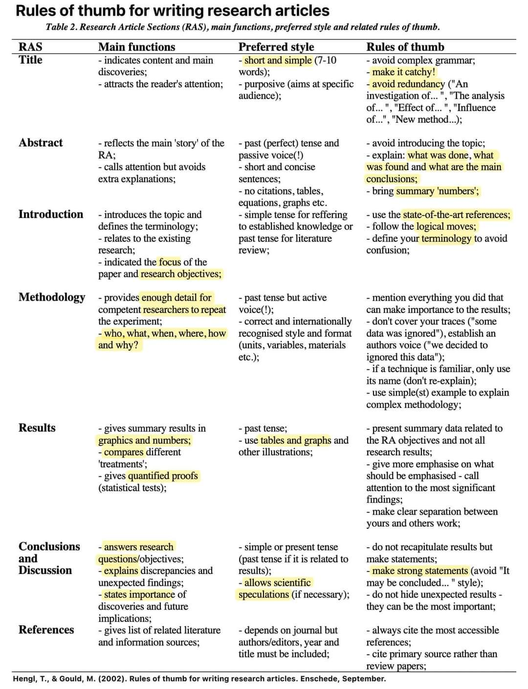

ESS 330 Final Project Guidelines
Research Process, Modeling, and Project Proposal
Scientists use the scientific method to answer research questions, which are based on detailed observations and a review of existing literature. This process helps identify knowledge gaps where further investigation is needed. A well-designed research project requires a clear question or objective, testable hypotheses, and specific predictions. Once these foundations are established, scientists collect data, apply appropriate analytical methods, and report their findings. The purpose of this class was to equit you with the quantative skills needed to conduct this research.
Research results can be communicated in various formats, such as scientific papers, conference presentations, formal reports, web applications, or outreach activities. Regardless of the format, properly communicating findings is essential for contributing to the scientific community and beyond.
The Role of Models in the Scientific Method
Models are a fundamental tool in scientific research, helping to simplify complex systems, test hypotheses, and make predictions. They allow scientists to explore different scenarios, assess uncertainty, and interpret patterns in data. In ecosystem science and sustainability, models can be used to analyze relationships between environmental variables, predict future conditions, and inform decision-making. Whether through statistical models, machine learning techniques, or process-based simulations, modeling plays a key role in refining scientific understanding and guiding research design.
Research Proposals and Planning
Before conducting a study, researchers often develop a research proposal, which serves as a blueprint for their project. This proposal is used to secure funding, obtain necessary permissions from environmental and academic authorities, and document the study plan. A research proposal typically includes:
An introduction that presents the topic and its significance,
A methods section outlining how data will be collected and analyzed, and
Additional elements such as a schedule and budget (not required for this class).
Because a proposal describes a study that has not yet been conducted, the methods section is written in future tense rather than past tense. Writing a research proposal is a critical step in the scientific process, as it helps refine the study’s scope, clarify predictions, identify key variables, and minimize the risk of manipulating data to fit expected outcomes.
Your Project Assignment
In Lab 5, you will develop your own research proposals to address a specific research question in ecosystem science and sustainability (in groups of 2-3). To encourage exploration and creativity, each person will develop two distinct proposals and compile the teams ideas into a single document. This ensures that you explore different directions before committing to a single idea and reduces the risk of getting “rabbit-holed” into a narrow focus too early.
Your team will then refine and develop one of your chosen proposals into a complete research project. Your research question should be answerable using the datasets available and within the timeframe of this course. You will apply the coding and statistical skills learned in class to analyze and present your findings.
You will ultimetly present your work in two forms, as a lightning talk and a formal report. The lightning talk is a brief presentation that summarizes your research project (simular to what you might give at a conference), while the formal report is a detailed written document that follows the structure of a scientific paper. Both components will be based on the same research question and findings.
Final Projects will have 3 milestones:
- Project proposal (Lab 5)
- Lightning talk presentations (Final Lab Section)
- Full project report (Due before your lightning talks)
Getting Started:
Project Proposal:
Done as lab 5, your project proposals will get you thinking about possible topics to study along with there interest, feasibility, and scope. Your TA’s will work with you to select one of your proposals as the basis for your final projects.
Lightning talks:
A lightning talk is a brief (~5-10 minute) presentation that encompasses the essence of your research project. Being so short, they require you to condense all your work into the most important highlights of your study and results. Your talk should include the background of your study, research questions/hypotheses, your results (at least 2 visuals), and end with the main conclusions and what you think is most important point for your audience to take away from your study.
These presentations will take place during your final lab section. Since you are working in groups, you can choose to either present as a group, or designate a single presenter (but allocate the rest of the work accordingly). This article has some tips on lightning talks.
Formal Report:
Your final report should follow the organization of a scientific paper but will be written in Quarto and submitted as a deployed Github site. It will be an expansion of your project proposal, but written in past tense since you completed the project.
When writing a scientific paper, the funnel method is a common approach to structuring the work. The main idea is that things start very broad, and then gradually narrow down to the specific research question or hypothesis before broadening again. Here’s how it typically works:
Using this structure, your paper must include the following sections:
1. Title:
Your title should adequately and concisely describe your project and findings.
2. Abstract
The abstract is almost always read first, so incorporate the most important parts of each aspect of the study. The abstract should briefly summarize each section of the paper (normally ~ 1-3 sentence for each section). Usually, these are limited to ~250 words.
2. Introduction/Hypothesis
Your introduction should start by describing a problem or question. It should then present sufficient background information and describe the importance of the study to the scientific community and any knowledge gaps you are addressing. You should compare your work to previous research. This is the section that will have the most citations. The introduction should end with the objectives and hypotheses being tested.
3. Methods
Methods sections should provide sufficient detail to allow someone to replicate your work. Describe the scope of your study, the study system (e.g., species, ecosystem, geographic location, etc.), datasets used (with citations), the process of compiling, formatting, and/or transforming the data, and the analyses used to test your hypotheses.
4. Results
Your results section must include the results of at least two different analyses (reported in proper scientific format) along with a minimum of two figures. In addition to two figures, you may also include tables.
Unlike a normal scientific paper, in the results section you should also include the code you ran to conduct the analyses. This includes any code used to test for assumptions, plus the final analysis (similar to how you completed homework assignments in Quarto). We will learn how to collapse this code in class making your final document more readable.
For example:
- Bad: Our p-value was 0.041, therefore we reject the null hypothesis
- Good: Cowbirds reared with host young were on average 14% heavier than cowbirds reared alone (unpaired t16 = −2.23, P = 0.041, Fig. 2A)
5. Discussion/Conclusions
In the discussion you should interpret and critically evaluate all your results. Compare your findings to other published related research and report final conclusions in relation to your original objectives and hypotheses.
6. Citations/References
You should have a minimum of 10 peer-reviewed primary sources (scientific journal articles). You can include data citations in this total. Every article/resource in the References section must be cited somewhere in your formal report, and, APA format (CSL) should be used.
Helpful Guidelines
